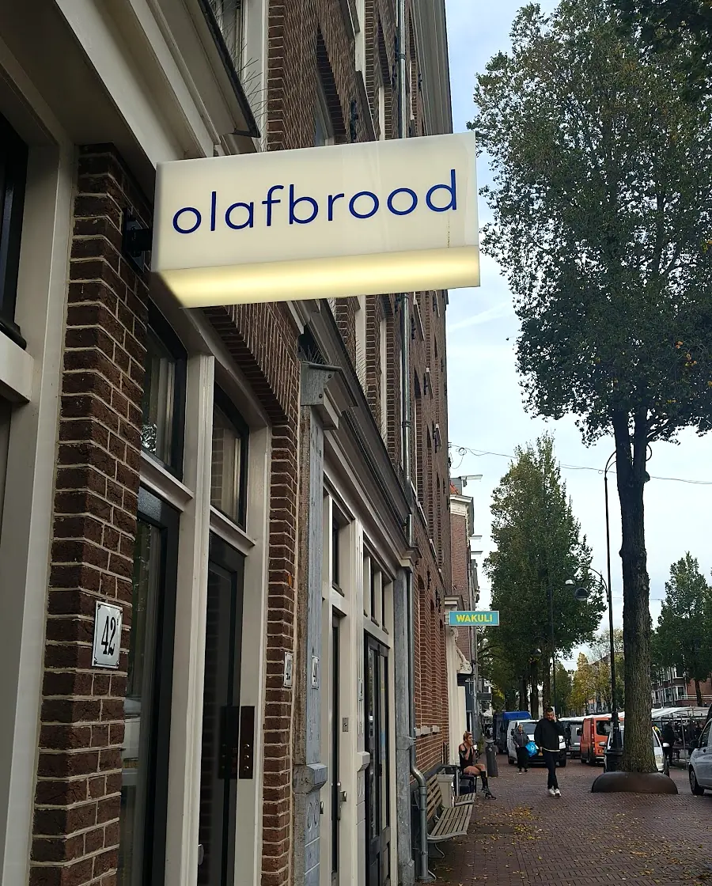
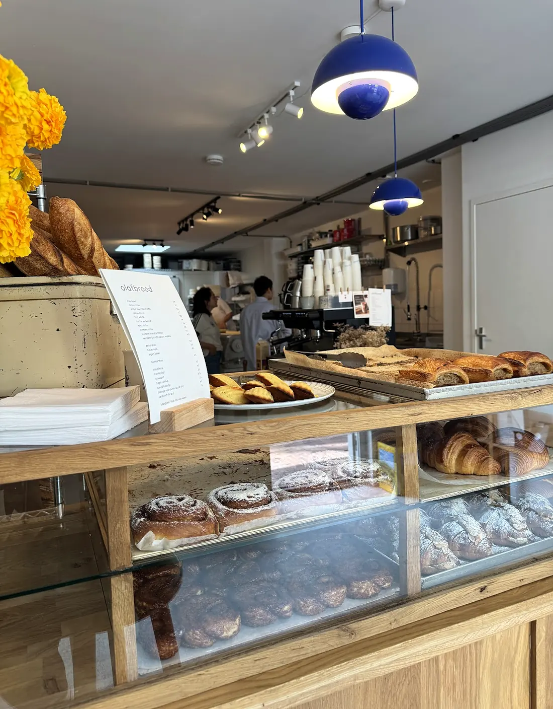
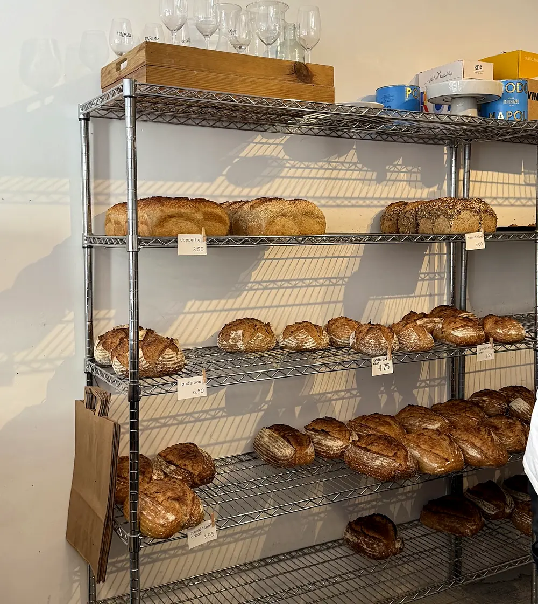

the bakery
a bakery you can look into.
olafbrood is a small craft bakery on the Dapperstraat in Amsterdam-Oost. The oven and the big oak work table sit right behind the counter, so while you order, you watch croissants being rolled and loaves being shaped.
Sourdough loaves on the wire racks. Croissants, almond croissants, pain au chocolat, madeleines and cinnamon buns on the counter. Coffee in a cobalt cup, or in a paper one to go.
There are only a few seats, so most people grab a coffee and a paper bag and head back out onto the street. Card only.
“Spoke with one of the guys about sourdough starter and he gave me some to bring home!”
Google review



- open kitchenwatch the baking from the counter
- card onlyno cash at the till
- own cup?a little off your coffee
- oat milkfor any coffee